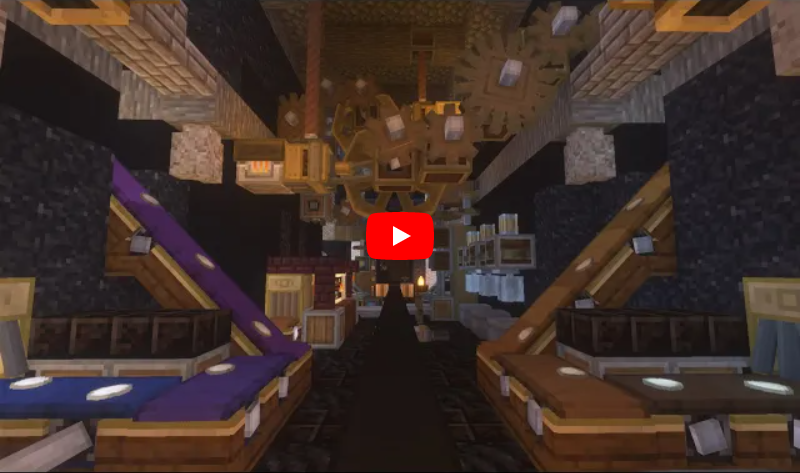

TheCo(g)sSMP¶
This is an another of our SMPs, dedicated to mod Create.
Create is a fantastic technological (steampunk?) mod that adds lots of machinery to the Minecraft world. Unlike regular mods, Create has a very aesthetic feel to it — it’s not just decorated blocks with custom inventories.
Unlike our other SMP, this one is in hard mode and focused towards survival aspect. It does not really mean it’s hard, but certainly requires to adapt. Cowardice, tactics and patience are your best friends in this world.
How to join¶
Installing the pack¶
In order to join the server you have to install mod pack with all required mods. To do so, you can either use GDLauncher (recommended), CurseForge or pre-packed version.
Last Updated: 17/01/2021 — v1.0.6-BETA.
GDLauncher can be used as an alternative to CurseForge if you don’t want to do anything with Overwolf, or couldn’t install it by some reason (no administrator access).
It will download the mod pack just like CurseForge would do, as well as it can manage Java for you. All that without administrator access and shady and bloated applications like Overwolf.
Note
To use Microsoft Account with GDLauncher, you have to download a beta version of it available on GitHub. Latest published version is on top, might be marked as ‘Pre-release’.
Download
mod pack file(do not unpack!).Log in into your account and complete the introduction.
Click + at the bottom left.
In the popup window, select Import Zip tab.
Select downloaded mod pack file and click →.
(Optionally) You can change instance name if you want.
Click → again. The mod pack will appear in instances list.
Wait until it’s downloaded (might take a while).
Click on it to launch the game!
Last Updated: 17/01/2021 — v1.0.6-BETA.
Installing a mod pack using CurseForge is easy and quick. Everything is written for you in a manifest file, all you need to do is import it in your CurseForge app and launch the game.
Importing mod pack in CurseForge:
Install CurseForge normally.
Download
mod pack(do not unpack).Go to CurseForge, click Create Custom Profile on top.
Click ‘import’ link in ‘Or import a previously created profile’
Select downloaded mod pack file (
created.zip) and click Open.Mod pack should immediately appear in your list.
Click Play to launch the game!
Last Updated: 17/01/2021 — v1.0.6-BETA.
Pre-packed version is a portable version of Minecraft with all mods, Forge version profile pre-installed. It contains both Minecraft Launcher and TL executables that can be started using different shortcuts.
Link to a recent version is available in pinned messages of #gaming
channel in Discord.
Launch via Minecraft Launcher:
Start Minecraft Launcher using
start_mc.batfile.Log in to your account.
Make sure ‘Cogs SMP’ profile is selected.
Click Play to launch the game!
Launch via TL:
Official TL launcher available and can be used by players without official Mojang account. Ely.by accounts can be added, but skins loaded with it will be local and not visible to other players on the server.
Start TL using
start_tl.batfile.Add your profile (first combo box).
Press Enter the game to launch the game!
Set Java arguments¶
For better performance, use the following Java arguments (copy all lines!).
-Xmn768m -Xmx2G -Xms512M -XX:+DisableExplicitGC -XX:+UseConcMarkSweepGC
-XX:+UseParNewGC -XX:+UseNUMA -XX:+CMSParallelRemarkEnabled
-XX:MaxTenuringThreshold=15 -XX:MaxGCPauseMillis=30
-XX:GCPauseIntervalMillis=150 -XX:+UseAdaptiveGCBoundary
-XX:-UseGCOverheadLimit -XX:+UseBiasedLocking -XX:SurvivorRatio=8
-XX:TargetSurvivorRatio=90 -XX:MaxTenuringThreshold=15
-Dfml.ignorePatchDiscrepancies=true
-Dfml.ignoreInvalidMinecraftCertificates=true
-XX:+UseFastAccessorMethods -XX:+UseCompressedOops -XX:+OptimizeStringConcat
-XX:+AggressiveOpts -XX:ReservedCodeCacheSize=2048m
-XX:+UseCodeCacheFlushing -XX:SoftRefLRUPolicyMSPerMB=10000
-XX:ParallelGCThreads=10
To set arguments, select way you installed mod pack:
Right click the pack in instances list.
Select Manage in context menu.
Toggle ‘Override Java’ to enabled state.
Paste the copied arguments (using
Ctrl+V).
Warning
Arguments set globally. If you plan on playing other packs, you’ll have to clear ‘Additional Arguments’ field.
Click in the bottom left.
In ‘Game Specific’ select Minecraft.
Scroll down to ‘Java Settings’.
Paste the copied arguments in ‘Additional Arguments’ field (using
Ctrl+V).

Lucky You!
Arguments are all set already :)
Note
If your Minecraft freezes frequently, check out F3 and see if ‘Mem’ in
top right corner reaches ~90% right when it freezes. If so, consider
bumping -Xmx argument to 2560MB or even 3G, it dictates
how much RAM Minecraft can use.
Install OptiFine¶
You can (and should!) install OptiFine to improve performance of the game even more. OptiFine is being installed like a normal Forge mod.
Please use version pre12 or latter for 1.16.4. Preview versions are hidden under ‘+ Preview versions’ spoiler. Pre12 added compatibility for Forge 35.1.36, which we currently use for the pack.
Options recommended to enable
Performance → Render Regions: enable.
Performance → Smart Animations: enable.
Performance → Fast Render: enable.
Details → Trees: Smart
Details → Rain: Fast / disable.
Joining the server¶
The IP, as always, can be found in pinned messages of #gaming Discord
channel.
Server features¶
Custom skins / capes¶
/skin set <username / url>¶
Sets skin of the player.
- Arguments
username – Username of player which skin to apply.
url – Link to skin file to apply.
/skin reset¶
Reset the skin to default one.
Warning
As our server is working in offline mode, skin will be reset to either
Steve or Alex. To set skin to your own use /skin set <your nick>.
/cape set <username / url>¶
Sets cape of the player.
Warning
This won’t download OptiFine capes.
- Arguments
username — Username of the player which cape to apply.
url — Link to cape file to apply.
/cape reset¶
Resets cape of the player.
Warning
As with the skins, no cape will be present if reset.
/ftbteams leave¶
Leave your current team.
/ftbteams modify <property> <value>¶
Modifies certain attributes of the current team.
- Arguments
property — property to modify (use Tab for list).
value — value to set property to.
/ftbteams invite <player>¶
Invites player to your team.
Player joining the team must leave their current team.
- Arguments
player — name of the player to invite.
Disabled mod features¶
Quark¶
Chute. Use Chute from Create mod.
Iron Rod. Use Drills from Create mod.
Endermites Form Shulkers. Weird feature.
Greener Grass. Too green.
Compasses Work Everywhere. Cheat-y? Might be re-enabled.
Sign Edit Requires Empty Hand enabled. Can imagine it being annoying.
Chorus Vegetation.
Enchanted Ladders. Cause of random weirdness when climbing ladders.
Change log¶
1.0.6-BETA¶
Developers of Quark implemented a fix that should fix the crash with Create mod, we’re updating to that version now, as well as switching to 1.16.5 Minecraft with newer Forge version.
- Updated
FastWorkbench: fixed visual bugs.
Quark: fixing a crash with Create mod.
- Changed
Minecraft updated to 1.16.5.
Forge updated to 36.0.0.
1.0.5-BETA¶
Unfortunately, due to incorrect implementation from Create mod, there is now incompatibility with Quark. We’re downgrading Quark for now in hope to fix that crash until the issue is fixed by Create developers.
- Downgraded
Quark: in attempt to fix crash with Create.
1.0.4-BETA¶
- Added
Precise Block Placing: be happy, button gods.
- Updated
FTBChunks: various fixes.
Quark: various improvements and fixes.
- Removed
Chisel & Bits: per voting result, due to huge memory leak.
- Changed
Forge: updated to 35.1.37.
1.0.3-BETA¶
- Added
Quark Oddities: meta mod to enable quark oddities addon.
1.0.2-BETA¶
- Updated
Quark: fixes crash.
Create: fixes and improvements.
Jade.
Biomes O’ Plenty: language files updates.
Chisel & Bits: fixes memory leak and performance issues.
Just Enough Resources: fixes broken overall trades view.
Decorative Blocks: fixes server crash.
- Changed
Quark: disabled ‘Enchanted Ladders’ tweak due to bugs.
1.0.1-BETA¶
- Updated
Quark to the newest version.
- Changed
Pre-packed: added Java arguments.
1.0.0-BETA¶
First build proven to be working and pretty nicely. Now, let’s spice up it a little with bunch of complex mods that do not really change much besides the look of the game and add helpful utilities for SMP.
Most of these mods can and probably will be removed if test server shows bad performance or RAM usage becomes too high. Despite it may seem it’s a little much of mods, they’re mostly small additions.
- Added
DamageTilt: ah, classic feature back from 1.2.5! When you get damaged, your camera tilts towards direction of the damager.
Biomes O’ Plenty: adds variety of pretty biomes.
Decorative Blocks: decorative blocks.
YUNG’s Better Mineshafts: amazing mineshafts in replacement to boring ones from vanilla.
FTB GUI Library: needed for JEI and other FTB mods.
FTB Teams: adds teams management.
FTB Chunks: allows teams to claim their chunks.
Macaw’s Roofs: what beautiful house is lacking? A nice roof!
Macaw’s Bridges: very cool bridges, bridges are cool.
Macaw’s Windows: we love transparent glass.
Macaw’s Doors: and nice doors.
Macaw’s Trapdoors: in addition to other mods of this series.
Just Enough Resources: shows where to search for resources in JEI.
JEI Enchantment Info: why you need Google? Just look in the game.
Mouse Tweaks: scrolling and faster pickup, we like shortcuts.
Cat Jammies: cats actually catJAM to music disks. MUST HAVE.
FastWorkbench: workbench do be zooming. Never could’ve thought I needed that.
Better Ping Display: actually better ping display, screw you bars!
RandomPatches: bunch of random patches to fix bugs and improve order of things.
AI Improvements: not a big fixer, but still helps a little with entities performance.
- Updated
Quark to the newest version.
- Changed
Quark: disabled greener grass on client because it’s too green. You can re-enable it if you want.
1.0.0-ALPHA¶
Initial untested build… for public testing!
- Added
Create: duh, that’s what the server is being made for!
Macaw’s Furniture: pretty furniture :)
SkinChanger: as we’re running in offline, there should be a way to set your skin.
JEI: allows viewing how to craft Create items.
Quark: bunch of small improvements to base game.
Chisel & Bits: was requested, allows building in small bits.
Jade: allows to view what block you look at.